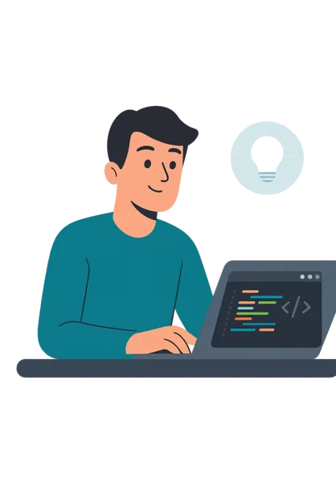

Apprenticeship · 18–24 months · Lyon
Innovation project
assistant
I study innovation at IRIIG and draw on my software development experience to explore a need with a team, compare options and plan a first test.

Selected work
Energy & computing
DCR Solutions
How can surplus or undervalued local electricity be put to use? I’m exploring modular computing centres with energy producers and industrial users.
Software developmentDive Lyon
CRM modules, Python scripts and an order-receiving interface built for the team at Dive.
Field researchPerce-Neige
A team project in Crémieu to design an activity suited to a resident’s everyday needs.